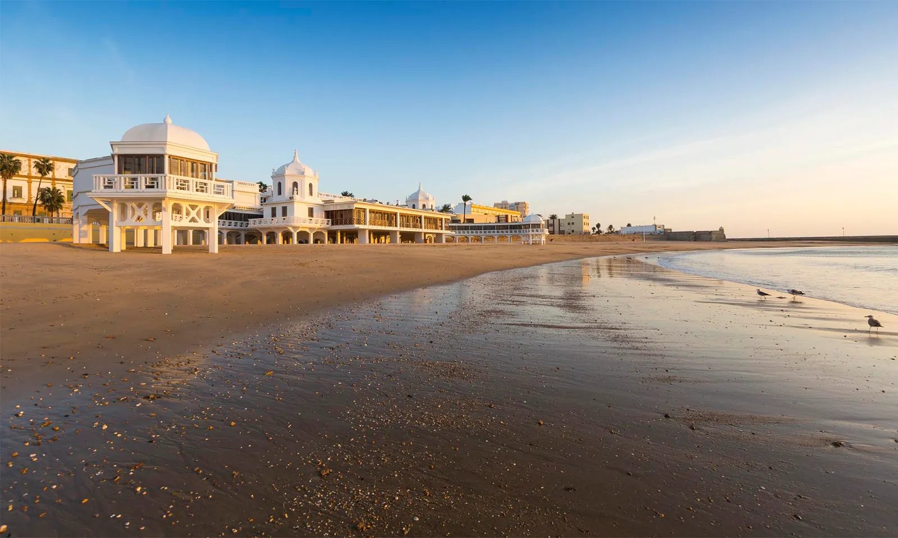
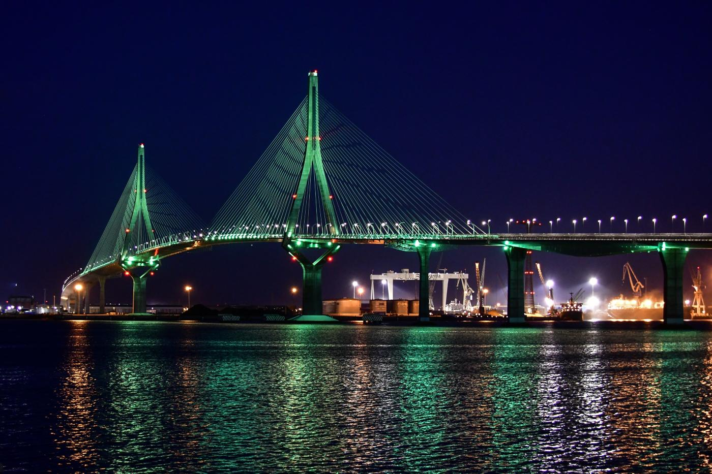
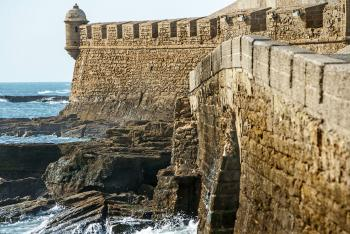

La caleta es una playa situada en el centro historico de la ciudad de Cádiz (Andalucia, España). Fue puerto natural en el que fondearon barcos de fenicios, cartagineses y romanos. Es la playa de menos extension de la ciudad, y aislada del resto.

Catedral de Cádiz

Puente de la Constitución de 1812
Puerta de Tierra

Castillo de San Sebastián